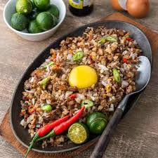
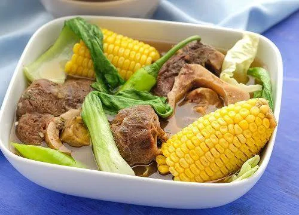
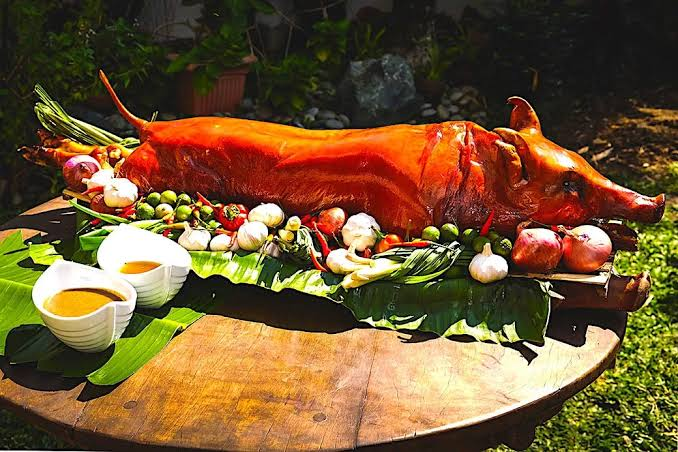
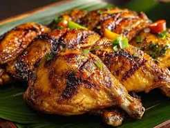
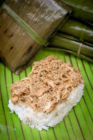
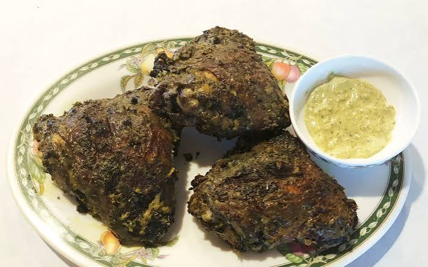
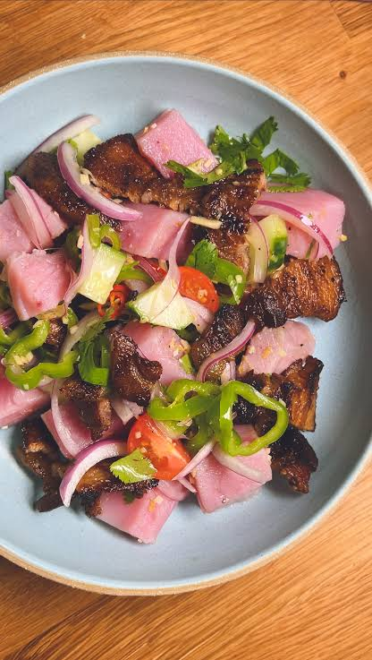

| Food Name | Image | Description |
|---|---|---|
| Category: Luzon | ||
| Sisig |
 |
A famous sizzling dish from Pampanga made with chopped parts of a pig's head and liver, seasoned with calamansi, onions, and chili peppers. It is often served hot on a stone plate. |
| Bulalo |
 |
A simple and rich soup from Batangas made by cooking beef shanks and bone marrow in water with a few vegetables until the soup is very flavorful and warm. |
| Bicol Express |
A spicy stew from the Bicol region made with pork meat, coconut milk, ginger, garlic, and lots of hot bird's eye chilies. |
|
| Category: Visayas | ||
| Cebu Lechon |
 |
Whole roasted pig stuffed with herbs, lemongrass, and green onions, famed for its ultra-crispy skin and flavorful, juicy meat without needing any sauce. |
| Chicken Inasal |
 |
Grilled chicken marinated in a distinct blend of calamansi, pepper, coconut vinegar, and anatto (atsuete) oil, giving it a smoky flavor and golden-orange color. You can try iconic versions at spots like Nena's Beth at Manokan Country in Bacolod. |
| La paz Batchoy |
A savory noodle soup originating from Iloilo City featuring round egg noodles, pork organs, crushed pork cracklings (chicharon), and rich broth. Popular places to get it include Netong's Original Special La Paz Batchoy. |
|
| Category: Mindanao | ||
| Pastil |
 |
Warm rice topped with shredded, spiced chicken or beef adobo, wrapped tightly in a banana leaf. It is a very popular, budget-friendly everyday meal originating from Maguindanao. |
| Pyanggang |
 |
A traditional Tausug chicken dish cooked in a rich, dark gravy made from burnt coconut meat and local spices like sakurab. It looks black but has a deep, smoky, and nutty flavor. |
| Sinuglaw |
 |
A famous Northern Mindanao specialty that mixes sinugba (grilled pork belly) and kinilaw (raw tuna ceviche marinated in vinegar and calamansi) into a single fresh and smoky dish. |